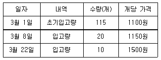

조리산업기사(공통) (2013-03-10 기출문제)
1과목: 식품위생 및 관련법규
1. 엔테로톡신(장관독)이 원인이 되는 식중독은?
- 웰치균(Clostridium perfringens) 식중독, 보툴리누스균 식중독
- 웰치균(Clostridium perfringens) 식중독, 황색포도상구균 식중독
- 보툴리누스균 식중독, 황색포도상구균 식중독
- 웰치균(Clostridium perfringens) 식중독, 보툴리누스균 식중독, 황색포도상구균 식중독
(정답률: 67%)

2. 식품위생법상 영업에 종사하지 못하는 사람의 질병이 아닌 것은?
- 화농성질환
- 피부병
- 비감염성 결핵
- 파라티푸스
(정답률: 92%)
3. 감염형의 세균성 식중독을 일으키는 것이 아닌 것은?
- 살모넬라균
- 비브리오균
- 병원성 대장균
- 황색포도상구균
(정답률: 80%)
4. 식품첨가물로 허용되어 있는 유지 추출제는?
- n-헥산(hexane)
- 글리세린(glycerin)
- 프로필렌글리콜(propylene glycol)
- 규소수지(silicon resin)
(정답률: 71%)
5. Clostridium perfringens에 의한 식중독이 가장 잘 발생하는 원인식품은?
- 야채류
- 곡류
- 육류
- 달걀
(정답률: 69%)
6. 단백질 식품의 부패정도를 측정하는 지표가 아닌 것은?
- 휘발성염기질소
- 과산화물가
- 수소이온농도(pH)
- histamine
(정답률: 59%)
7. 노로바이러스로 인한 식중독을 예방하기 위한 방법으로 적합하지 않은 것은?
- 식중독 환자가 발생한 경우에는 2차 감염 및 확산 방지를 위하여 환자 분변·구토물·화장실, 의류·식기 등은 염소 또는 열탕 소독하여야 한다.
- 지하수는 조리에 절대 사용을 금하며, 식기와 조리기구 세척에만 사용한다.
- 음식은 85℃에서 1분 이상 가열·조리하고 조리한 음식은 맨손으로 만지지 않는다.
- 가열하지 않은 조개, 굴 등의 섭취는 자제하여야 한다.
(정답률: 75%)
8. 식품과 독성물질과의 연결이 옳은 것은?
- 독버섯 - venerupin
- 모시조개 - saxitoxin
- 청매 - gossypol
- 독미나리 - cicutoxin
(정답률: 76%)
9. 부패한 감자에서 생성되는 독성물질은?
- ricin
- phaline
- sepsine
- solanine
(정답률: 74%)
10. 조리사가 면허취소 처분을 받은 경우 언제까지 면허증을 반납하여야 하는가?
- 7일
- 10일
- 지체없이
- 30일
(정답률: 85%)
11. 자외선 살균등의 효과에 관한 설명으로 틀린 것은?
- 모든 균종에 효과가 있다.
- 대상물에 거의 변화를 주지 않는다.
- 식품내부나 그늘진 곳에도 효과가 있다.
- 잔류 효과가 없다.
(정답률: 75%)
12. 영업을 하던 중 신고를 하여야 하는 변경사항이 아닌 것은?
- 영업소의 소재지
- 영업장의 면적
- 휴식을 위한 시설보수
- 영업소의 상호
(정답률: 83%)
13. 다음 중 허위표시·과대광고로 보지 아니하는 표시 및 광고의 범위와 그 적용대상 식품에 대한 설명 중 틀린 것은?
- 특정 질병을 지칭하지 아니하는 단순한 권장 내용의 표현
- '칼슘은 뼈와 치아의 형성에 필요한 영양소'라는 제품에 함유된 영양성분의 기능 및 작용에 관한 표현
- '해당 제품이 유아식, 환자식 등으로 섭취하는 특수 용도식품'이라는 제품의 제조 목적이나 주요 용도에 대한 표현
- 제품의 성질상 섭취방법과 섭취량을 표현하여야 할 경우 해당제품의 의학적 기준으로 가장 적합하다고 생각되는 섭취량 및 섭취방법
(정답률: 61%)
14. 식품위생법상 영업소에서 식품의 조리에 종사하는 자가 정기건강진단을 받아야 하는 횟수는?
- 1회/3개월
- 1회/6개월
- 1회/1년
- 1회/2년
(정답률: 77%)
15. 어육의 부패를 판정하기 위한 실험 결과중 부패로 판정하기 힘든 경우는?
- 관능검사 결과 암모니아와 아민의 냄새가 난다.
- 식품 1g당의 생균수가 1010이다.
- 식품 100g당의 휘발성 염기 질소의 양이 50mg이다.
- pH가 5.5 전후다
(정답률: 73%)
16. 신경에 존재하는 cholinesterase의 작용을 억제하여 중독을 일으키는 농약은?
- 유기인제
- 유기염소제
- 유기수은제
- 유기비소제
(정답률: 56%)
17. 소독과 살균에 관한 내용으로 옳은 것은?
- 소독은 병원미생물을 죽이거나, 반드시 죽이지는 못한다 하더라도 병원성을 약화시켜 감염력을 억제하는 조작을 말한다.
- 살균은 미생물을 죽이는 조작을 말하는데 80℃, 20분 가열로 미생물의 포자까지 사멸시킬 수 있다.
- 60Co의 감마선 조사는 식기의 소독에 널리 이용되고 있는 방법이다.
- 양성비누(역성비누)는 살균력은 약하지만 세척력이 뛰어나 널리 이용된다.
(정답률: 70%)
18. 도자기를 용기로 사용할 때 문제가 될 수 있는 중금속은?
- 비소(As)
- 납(Pb)
- 구리(Cu)
- 수은(Hg)
(정답률: 69%)
19. 식품 등의 표시기준상 트랜스지방의 정의는?
- 트랜스구조를 1개 이상 가지고 있는 비공맥형의 모든 불포화지방
- 트랜스구조를 2개 이상 가지고 있는 공맥형의 모든 불포화지방
- 트랜스구조를 1개 이상 가지고 있는 비공맥형의 모든 포화지방
- 트랜스구조를 2개 이상 가지고 있는 비공맥형의 모든 불포화지방
(정답률: 57%)
20. 다음 중 소독 효과가 가장 약한 것은?
- 알코올
- 석탄산
- 크레졸
- 중성세제
(정답률: 82%)
2과목: 식품학
21. 유지의 화학적 성질을 검사하는 방법에 대한 설명으로 옳은 것은?
- 비누화가 : 유지중의 유리지방산과 ester의 비율
- 과산화물가 : 유지 1g중에 함유되어 있는 과산화물의 mg수
- 요오드가 : 유지 1g이 흡수한 요오드의 mg수
- 산가 : 유지 1g중의 유리 지방산을 중화하는데 필요한 수산화칼륨의 mg수
(정답률: 50%)
22. 합성감미료인 아스파탐의 구성성분으로 옳은 것은?
- 글루타민산(glutamic acid) + 라이신(lysine)
- 아스파트산(aspartic acid) + 라이신(lysine)
- 클루타민산(glutamic acid) + 페닐알라닌(phenylalanine)
- 아스파트산(aspartic acid) + 페닐알라닌(phenylalanine)
(정답률: 59%)
23. DHA나 EPA같은 불포화지방산이 많이 함유되어 있는 것은?
- 대두유
- 배아유
- 난황
- 등푸른생선
(정답률: 83%)
24. 열량권장량이 2400kcal인 경우, 이 중 15%를 단백질에서 얻으려면 몇 g 섭취하여야 하는가?
- 15g
- 36g
- 75g
- 90g
(정답률: 57%)
25. 두부는 어떤 성분을 염류에 의해 응고시켜 만든 것인가?
- albumin
- oryzenin
- glycinin
- casein
(정답률: 64%)
26. 아밀로펙틴과 아밀로오스를 비교한 설명 중 틀린 것은?
- 아밀로오스와 아밀로펙틴은 모두 포도당으로 구성되어 있다.
- 아밀로오스의 요오드 반응은 적자색이고, 아밀로펙틴의 요오드 반응은 청색이다.
- 아밀로오스는 직쇄의 구조이고, 아밀로펙틴은 가지를 친구조이다.
- 아밀로오스는 아밀로펙틴보다 분자량이 작다.
(정답률: 65%)
27. 간장 발효시 착색은 주로 어떤 반응에 의한 것인가?
- 캐러멜화 반응
- 마이야르 반응
- 아스코르브산 산화반응
- 폴리페놀 산화반응
(정답률: 63%)
28. 한천에 대한 설명 중 맞는 것은?
- 급원은 식물성이며 주성분은 콜라겐(collagen)이다.
- 융해온도가 낮아 50℃이상이면 녹는다.
- 젤라틴 젤(gelatin gel)에 비해 질감이 부드럽다.
- 설탕이나 과즙을 첨가하는 경우에는 한천의 젤이 잘 형성되지 않는다.
(정답률: 47%)
29. 단백질에 대한 설명으로 틀린 것은?
- 식품단백질을 구성하는 아미노산은 20여개이다.
- 아미노산은 1개 이상의 아미노기와 1개 이상의 카르복실기를 갖는다.
- 단백질의 구조는 분자의 모양에 따라 구형단백질과 섬유상 단백질로 구분한다.
- 단백질 분자를 구성하는 아미노산의 결합순서를 단백질의 2차구조라고 한다.
(정답률: 41%)
30. 지방 산패를 촉진시키는 것은?
- 철
- 토코페롤
- BHA
- 구연산
(정답률: 64%)
31. 메밀에 대한 설명 중 틀린 것은?
- 메밀단백질에는 알부민(albumin)과 글루텔린(glutelin)이 약 40%정도씩 함유되어 있다.
- 메밀단백질에는 프로라민(prolamine)이 적어 점성이 거의 없다.
- 메밀단백질에는 다른 곡류에 비하여 라이신(lysine)과 트립토판(tryptophan)이 적게 들어 있다.
- 메밀에 들어 있는 루틴(rutin)은 뇌출혈 예방효과가 있다.
(정답률: 70%)
32. 어육의 자기 소화의 원인은?
- 고기 중의 산소에 의해 일어난다.
- 어육내에 존재하는 염류에 의해 일어난다.
- 어육내에 존재하는 유기산에 의해 일어난다.
- 어육내에 존재하는 효소에 의해 일어난다.
(정답률: 66%)
33. 분산질의 크기에 따라 큰 것부터 나열된 것은?
- 현탁액 ＞ 콜로이드 용액 ＞ 진용액
- 진용액 ＞ 콜로이드 용액 ＞ 현탁액
- 현탁액 ＞ 진용액 ＞ 콜로이드 용액
- 진용액 ＞ 현탁액 ＞ 콜로이드 용액
(정답률: 48%)
34. 쌀밥에 콩을 넣어 혼식 할 경우 단백가가 보강될 수 있는 필수 아미노산은?
- 트립토판(tryptophan)
- 발린(valine)
- 메티오닌(methionine)
- 라이신(lysine)
(정답률: 74%)
35. 토마토나 수박의 붉은색 색소명과 색소의 분류는?
- 루테인(lutein) - 카로티노이드
- 라이코펜(lycopene) - 카로티노이드
- 퓨코크산틴(fucoxanthin) - 안토시아닌
- 크립토크산틴(cryptoxanthin) - 안토시아닌
(정답률: 73%)
36. D-glucose를 환원시켜 만든 당은?
- sorbitol
- glycogen
- gluconic acid
- glucosaccharic acid
(정답률: 46%)
37. 다음 중 유중수적(W/O)형 유화식품은?
- 마요네스
- 생크림
- 우유
- 버터
(정답률: 76%)
38. 샐러드 제조시 녹색 채소가 산에 의해 누렇게 변색되는 이유는?
- 안토시아닌의 산화
- 플라본색소의 개환(chalcone화)
- 클로로필의 페오피틴화(pheophytin화)
- 카로티노이드의 산화
(정답률: 75%)
39. 채소류와 가식부위의 연결이 옳은 것은?
- 연근 - 꽃눈
- 양배추 - 구상줄기
- 죽순 - 어린 줄기, 싹
- 곤약 - 잎
(정답률: 77%)
40. 자유수와 결합수에 대한 설명 중 틀린 것은?
- 결합수는 용매로서 작용하지 않는다.
- 결합수는 0℃ 이하에서도 잘 얼지 않는다.
- 자유수는 건조로 쉽게 제거 가능하다.
- 자유수는 미생물의 생육·증식에 이용되지 못한다.
(정답률: 75%)
3과목: 조리이론 및 급식관리
41. 쌀 전분의 amylose함량은?
- 0%
- 10 ~ 15%
- 20 ~ 25%
- 75 ~ 80%
(정답률: 71%)
42. 약한 수렴성 맛을 주며 쾌감을 주는 탄닌이 함유된 것은?
- 토마토
- 오이
- 사과
- 커피
(정답률: 76%)
43. 전분의 조리에 대한 설명으로 옳은 것은?
- 전분을 160℃의 건열로 가열하면 덱스트린(dextrin)으로 분해되는데 이를 호정화라 한다.
- 호화된 전분은 결정성이 나타난다.
- 조리하면 α형 전분이 β형 전분으로 된다.
- 호화되면 효소의 작용을 받기가 어렵다.
(정답률: 64%)
44. 흰색 채소의 흰색을 그대로 유지시킬 수 있는 조리방법은?
- 소다를 넣고 삶는다.
- 소금을 넣고 삶는다.
- 식초를 넣고 삶는다.
- 설탕을 넣고 삶는다.
(정답률: 70%)
45. 콩조림을 만들 때 처음부터 간장이나 설탕 등의 조미료를 첨가하여 끓이면 콩이 딱딱해 지는 것은 어떤 현상 때문인가?
- 삼투압현상
- 모세관현상
- 용출현상
- 팽윤현상
(정답률: 77%)
46. 생선조리에서 어취를 제거해주는 성분이 잘못 연결된 것은?
- 고추냉이 - allyl isothiocyanate
- 무 - methyl mercaptan
- 생강 - gingerone
- 후추 - capsaicin
(정답률: 76%)
47. 머랭은 달걀의 어떤 성질을 이용하여 만든 것인가?
- 유화성
- 기포성
- 응고성
- 점성
(정답률: 79%)
48. 생선 조리에 대한 설명 중 틀린 것은?
- 생선을 구우면 단백질이 변성되어 단단해지거나 질감이 연하게 느껴지는 이유는 젤라틴이 물을 흡수하여 콜라겐화 되기 때문이다.
- 생선으로 찌개나 탕을 끓일 때는 국물을 끓인 다음에 생선을 넣어야 국물이 맑고 생선살도 풀어지지 않는다.
- 생선을 구울 대는 소금에 절였다가 구우면 생선단백질이 변성 응고되어 모양이 부서지지 않는다.
- 생선찌개의 된장이나 고추장 양념은 흡착력과 점성이 강하여 다른 조미료의 침투를 방해하므로 다른 조미료를 먼저 첨가한 후에 사용하도록 한다.
(정답률: 67%)
49. 과일류의 분류가 잘못된 것은?
- 인과류 : 사과, 배, 감
- 핵과류 : 복숭아, 자두, 살구
- 장과류 : 포도, 딸기, 대추
- 견과류 : 밤, 호두, 잣
(정답률: 76%)
50. 가열 조리되는 식품의 조리열 전달 매체가 아닌 것은?
- 공기
- 증기
- 물
- 압력
(정답률: 73%)
51. 어느 식당의 3월 한 달간 통조림 구입 내역이 아래와 같고, 3월말에 실사재고를 한 결과 15개의 재고가 남았다면 선입선출법에 의한 재고금액은?

- 16500원
- 17250원
- 20750원
- 30000원
(정답률: 67%)
52. 단체급식소에서 냉장고를 3000000원에 구입하였다. 잔존가격이 300000원, 내용년수가 10년인 냉장고의 감가삼가비를 정액법으로 계산하면 얼마인가?
- 200000원
- 270000원
- 330000원
- 360000원
(정답률: 61%)
53. 인플레이션이나 물가 상승시 소득세를 줄이기 위해 재무제표상의 이익을 최소화하기 위하여 사용하는 평가방법은?
- 최종구매가법
- 총평균법
- 선입선출(FIFO)법
- 후입선출(LIFO)법
(정답률: 58%)
54. 당류의 감미도가 큰 것부터 순서대로 나열된 것은?
- fructose ＞ sucrose ＞ glucose ＞ meltose ＞ lactose
- fructose ＞ glucose ＞ sucrose ＞ maltose ＞ lactose
- sucrose ＞ fructose ＞ glucose ＞ maltose ＞ lactose
- fructose ＞ sucrose ＞ glucose ＞ lactose ＞ maltose
(정답률: 64%)
55. 파인애플에 들어 있는 단백질 분해 효소는?
- 티로시나제(tyrosinase)
- 파파인(papain)
- 브로멜린(bromelin)
- 피신(ficin)
(정답률: 70%)
56. 건조저장실의 조건으로 옳은 것은?
- 온도는 25 ~ 30℃가 적당한다.
- 습도는 30 ~ 40%가 적당하다.
- 창문은 환기가 가능하도록 커야 하며, 망의 간격은 클수록 좋다.
- 직사광선을 막을 수 있는 시설·설비를 구비한다.
(정답률: 63%)
57. 저장관리시 고려해야 할 사항이 아닌 것은?
- 분류저장
- 품질보존
- 후입선출
- 저장위치 표시
(정답률: 70%)
58. 생선을 통으로 구입하여 횟감으로 썰었더니 무게가 5kg이 나왔다면 이 생선의 원래 무게는? (단, 이 생선의 폐기율은 65%이다.)(오류 신고가 접수된 문제입니다. 반드시 정답과 해설을 확인하시기 바랍니다.)
- 7.7kg
- 11.0kg
- 12.0kg
- 14.3kg
(정답률: 57%)
59. 건열조리의 조리방법에 대한 설명으로 틀린 것은?
- 구이는 고온에서 가열하며 식품표면에서 탈수가 일어나 맛이 농후해지나 전체를 고르게 가열하기 어렵다.
- 튀김은 식품에 수분함량이 많을수록 열전달이 잘되어 빨리 가열된다.
- 오븐구이는 공기의 열전도율이 낮아 가열시간이 오래걸리나 형태를 유지한 상태로 가열할 수 있다.
- 볶기는 팬의 열용량이 크고 두꺼운 것이 좋으며 열전달을 균일하게 하기 위해 자주 섞어주는 것이 좋다.
(정답률: 73%)
60. 달걀의 응고 온도에 대한 설명 중 맞는 것은?
- 가열은 응고를 지연시킨다.
- 등전점과 열 응고는 관계가 없다.
- 설탕의 첨가는 응고를 촉진시킨다.
- 고온에서 가열할수록 단단해지고 수축되나.
(정답률: 73%)
4과목: 공중보건학
61. 수질오염의 지표들 가운데 수치가 높을 때 좋은 수질을 나타내는 것은?
- 용존산소(DO)
- 화학적산소요구량(COD)
- 부유물질(SS)
- 용해성 물질(SM)
(정답률: 81%)
62. 구층·구서의 일반적인 원칙이라 할 수 없는 것은?
- 발생초기에 구제
- 성충이 된 후 해충구제
- 발생원 및 서식처 제거
- 광범위하게 동시에 구제
(정답률: 74%)
63. 수질검사에서 과망간산칼륨 소비량을 측정하는 의미는?
- 일반 세균수의 추정
- 대장균군의 추정
- 유기물의 양 추정
- 경도 및 탁도의 추정
(정답률: 64%)
64. 온열조건의 4대 인자는?
- 기온, 기습, 기압, 기류
- 기온, 기압, 기습, 복사열
- 기온, 기압, 기류, 복사열
- 기온, 기류, 기습, 복사열
(정답률: 64%)
65. 백신예방 접종을 통하여 얻어지는 면역은?
- 인공피동면역
- 인공능동면역
- 자연능동면역
- 자연피동면역
(정답률: 68%)
66. 쥐가 매개하는 질병에 속하지 않는 것은?
- 페스트
- 살모넬라증
- 발진열
- 사상충증
(정답률: 69%)
67. 경구감염과 경피감염을 일으키고 장에서 기생하면서 흡혈로 인한 빈혈증상을 일으키는 선충류는?
- 회충
- 요충
- 편충
- 구충
(정답률: 61%)
68. 다음 중 사회적 환경에 해당하는 것은?
- 소리
- 의복
- 광선
- 위생해충
(정답률: 72%)
69. 자외선 중 생명선의 파장 범위는?
- 100 ~ 150nm
- 200 ~ 260nm
- 280 ~ 320nm
- 360 ~ 400nm
(정답률: 77%)
70. 접촉감염지수(감수성지수)가 가장 낮은 것은?
- 홍역
- 백일해
- 성홍열
- 폴리오
(정답률: 61%)
71. 실내 자연환기의 원동력이라 볼 수 없는 것은?
- 실내외의 온도차
- 기체의 확산력
- 외기의 풍력
- 대기압의 차
(정답률: 66%)
72. 급성 감염병으로서 빠른 경과를 취하는 역학적 특성은?
- 발생률이 높고 유병률이 낮다.
- 발생률이 낮고 유병률이 높다.
- 발생률이 높고 유병률이 높다.
- 발생률이 낮고 유병률이 낮다.
(정답률: 71%)
73. 어떤 세균을 20℃에서 10분간 사열할 수 있는 순수한 석탄산 희석배율이 80배일 때, 실험하려는 소독막을 160배로 희석한 것이 같은 조건하에서 같은 살균력을 갖는다면, 석탄산 계수는?
- 0.5
- 1.5
- 2
- 2.5
(정답률: 62%)
74. 부패조법은 하수 중의 어떤 미생물을 이용한 것인가?
- 혐기성미생물
- 호기성미생물
- 통성혐기성미생물
- 아포성미생물
(정답률: 67%)
75. 국가간 혹은 지역사회간의 보건수준을 비교하는데 사용되는 지표로 틀린 것은?
- 영아사망율
- 비례사망지수
- 평균수명
- 출산율
(정답률: 57%)
76. 소화기계 감염병은?
- 디프테리아
- 백일해
- 장티푸스
- 홍역
(정답률: 72%)
77. 먹는물의 수질판정기준 중 유해한 유기물질 검사항목에 해당되는 것은?
- 납
- 비소
- 파라티온
- 6가크롬
(정답률: 52%)
78. 규폐증과 관련된 직업으로 바르게 짝지어진 것은?
- 채석공, 페인트공
- 인쇄공, 페인트공
- X선기사, 용접공
- 암석연마공, 채석공
(정답률: 77%)
79. 방사선 장애에 의해서 올 수 있는 대표적인 직업병은?
- 위암
- 백혈병
- 진폐증
- 골다공증
(정답률: 76%)
80. 물이나 식품오염도의 중요한 지표가 되는 미생물은?
- 대장균
- 장티푸스균
- 이질균
- 간염균
(정답률: 80%)